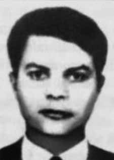

José
Milton
Barbosa
CIRCUNSTÂNCIAS DA MORTE
José Milton Barbosa foi morto, no dia 5 de dezembro de 1971, quando estava sob domínio de agentes do Estado. A versão oficial, divulgada a época dos fatos, registra que José Milton, ao tentar roubar um carro “Galaxie”, em companhia de Linda Tayah, foi abordado por policiais dos Órgãos de Segurança Nacional. Os documentos, no entanto, atribuem a José Milton o nome de Hélio José da Silva, e à Linda a identidade de Suely Nunes. Ainda segundo a versão divulgada pela repressão, José Milton teria resistido à voz de prisão, quando se travou violento tiroteio que teria culminado em sua morte decorrente dos ferimentos sofridos. No entanto, como demonstra o relato de sua companheira Linda Tayah de Mello, as circunstâncias foram radicalmente distintas. Segundo a companheira de José Milton à época, estava o casal, acompanhado de outro militante, Gelson Reicher – que viria ser assassinado pouco mais de um mês após o episódio – no bairro de Sumaré na cidade de São Paulo. O grupo de militantes avistou uma blitz policial na região, o que os impulsionou a estacionarem o carro e caminharam tranquilamente na tentativa de não chamar a atenção dos policias. O casal pulou um muro que os levou a outra rua, nesse momento Gelson já havia se dispersado do grupo. Linda e José Milton resolveram, então, parar um carro particular. Segundo Linda, sua última lembrança é a de ter entrado no carro enquanto seu companheiro teria ficado ao lado de fora segurando uma metralhadora. Nesse momento, foi alvejada por uma bala, o que provocou seu desmaio. Declara, ainda, que ao despertar chegou a ver José Milton no banco ao lado, desmaiado, porém sem sinais de ferimentos. Os dois foram levados, cada um em um automóvel diferente, para o DOI-CODI/II, onde cada um foi para uma sala diferente. Algumas horas depois de dar entrada no DOI-CODI/II, Linda foi levada ao hospital para fazer uma cirurgia, onde ficou alguns dias. Quando retornou ao DOI-CODI/II, recebeu a notícia de que José Milton tinha morrido. As investigações realizadas pela CEMDP levantaram indícios que permitem desconstruir a versão oficial: primeiro, há uma diferença de cinco horas entre a morte e a entrada do corpo no IML, o que apenas reforça a declaração de Linda Tayah, que atesta a passagem de José Milton pelo DOI. Além disso, uma contradição aparece quando se compara as fotografias do corpo com o laudo necroscópico, que, embora minucioso, não fez qualquer referência aos visíveis ferimentos apresentados em diversas partes do rosto. Juntamente com as marcas no rosto, causa estranheza o fato de José Milton estar vestindo casaco de lã e cachecol em pleno mês de dezembro em São Paulo, o que sugere a intenção de os agentes encobrirem marcas pelo corpo, dessa forma disfarçando a tortura sofrida por José Milton. É possível, portanto, inferir que ele foi capturado com vida e torturado até a morte. Observa-se também que na certidão de óbito de José Milton aparece com o nome Hélio José da Silva, sendo enterrado no cemitério Dom Bosco, no bairro de Perus/SP com esta identidade. Como demonstram alguns documentos do DOPS/SP, como o Ofício no 353/72 assinado pelo delegado Emiliano Leopoldo Cardoso de Mello, os agentes da segurança tinham plena noção de quem era José Milton Barbosa, pois conheciam até mesmo as suas impressões digitais, como pode se perceber em exame com digitais anexado ao laudo do IML. Este documento, especificamente, contém o nome real de José Milton. Além disso, a Requisição de Exame para o IML, apresentada pelo DOPS, foi registrada em nome falso e contém um “T” grafado a mão, fato comum entre os documentos oficialmente produzidos pela repressão que tratavam de perseguidos políticos. O “T”, nesse caso, indicaria “terrorista”, como eram chamados os militantes opositores ao regime. O corpo de José Milton segue desaparecido, uma vez que seus restos mortais nunca foram devidamente identificados. Em audiência pública, promovida pela Comissão Estadual da Verdade Rubens Paiva em 20 de março de 2014, Suzana Lisbôa relatou que Linda Tayah não reivindicou o corpo, pois ela e José Milton nunca foram formalmente casados, o que a fez pensar que não tivesse esse direito.
José Milton Barbosa was killed on December 5, 1971, when he was under the control of State agents. The official version, released at the time of the events, records that José Milton, when trying to steal a “Galaxie” car, in the company of Linda Tayah, was approached by police officers from the National Security Organs. The documents, however, give José Milton the name Hélio José da Silva, and Linda the identity of Suely Nunes. Still according to the version released by the repression, José Milton would have resisted being arrested, when a violent shootout took place that would have culminated in his death due to the injuries he suffered. However, as the account of his companion Linda Tayah de Mello demonstrates, the circumstances were radically different. According to José Milton's partner at the time, the couple was accompanied by another militant, Gelson Reicher – who would be murdered just over a month after the episode – in the Sumaré neighborhood in the city of São Paulo. The group of militants saw a police raid in the region, which prompted them to park the car and walk calmly in an attempt not to attract the attention of the police. The couple jumped over a wall that took them to another street, at which point Gelson had already dispersed from the group. Linda and José Milton then decided to stop a private car. According to Linda, her last memory is of getting into the car while her companion was standing outside holding a machine gun. At that moment, she was shot by a bullet, which caused her to faint. He further states that when he woke up he saw José Milton on the bench next to him, passed out, but with no signs of injury. The two were taken, each in a different car, to DOI-CODI/II, where each one went to a different room. A few hours after being admitted to DOI-CODI/II, Linda was taken to the hospital for surgery, where she stayed for a few days. When he returned to DOI-CODI/II, he received the news that José Milton had died. The investigations carried out by CEMDP raised evidence that allows us to deconstruct the official version: firstly, there is a difference of five hours between the death and the body's entry into the IML, which only reinforces Linda Tayah's statement, which attests to José Milton's passage through the DOI. Furthermore, a contradiction appears when comparing the photographs of the body with the autopsy report, which, although detailed, did not make any reference to the visible injuries presented on different parts of the face. Along with the marks on his face, it is strange that José Milton was wearing a wool coat and scarf in the middle of December in São Paulo, which suggests that the agents intended to cover up marks on his body, thus disguising the torture suffered by José Milton. It is possible, therefore, to infer that he was captured alive and tortured to death. It is also noted that José Milton's death certificate appears with the name Hélio José da Silva, being buried in the Dom Bosco cemetery, in the neighborhood of Perus/SP with this identity. As some DOPS/SP documents demonstrate, such as Official Letter No. 353/72 signed by delegate Emiliano Leopoldo Cardoso de Mello, the security agents were fully aware of who José Milton Barbosa was, as they even knew his fingerprints, as can be seen in a fingerprint examination attached to the IML report. This document, specifically, contains the real name of José Milton. Furthermore, the Request for Examination for the IML, presented by the DOPS, was registered in a false name and contains a handwritten “T”, a common fact among documents officially produced by the repression that dealt with politically persecuted people. The “T”, in this case, would indicate “terrorist”, as the militants opposing the regime were called. José Milton's body remains missing, as his remains were never properly identified. In a public hearing, promoted by the Rubens Paiva State Truth Commission on March 20, 2014, Suzana Lisbôa reported that Linda Tayah did not claim the body, as she and José Milton were never formally married, which made her think she did not have that right.
José Milton Barbosa fue asesinado el 5 de diciembre de 1971, cuando se encontraba bajo control de agentes del Estado. La versión oficial, difundida al momento de los hechos, registra que José Milton, al intentar robar un auto “Galaxie”, en compañía de Linda Tayah, fue abordado por policías de los Órganos de Seguridad Nacional. Los documentos, sin embargo, dan a José Milton el nombre de Hélio José da Silva y a Linda la identidad de Suely Nunes. Aún según la versión difundida por la represión, José Milton se habría resistido a ser detenido, cuando se produjo un violento tiroteo que habría culminado con su muerte a causa de las heridas que sufrió. Sin embargo, como demuestra el relato de su compañera Linda Tayah de Mello, las circunstancias fueron radicalmente diferentes. Según la entonces pareja de José Milton, la pareja estaba acompañada por otro militante, Gelson Reicher –quien sería asesinado poco más de un mes después del episodio– en el barrio de Sumaré, en la ciudad de São Paulo. El grupo de militantes vio una redada policial en la región, lo que les impulsó a aparcar el coche y caminar tranquilamente para intentar no llamar la atención de la policía. La pareja saltó un muro que los llevó a otra calle, momento en el que Gelson ya se había dispersado del grupo. Linda y José Milton decidieron entonces detener un auto particular. Según Linda, su último recuerdo es cuando se subió al coche mientras su compañero estaba afuera sosteniendo una ametralladora. En ese momento, recibió un disparo de bala que le provocó un desmayo. Agrega que al despertar vio a José Milton en el banco junto a él, desmayado, pero sin signos de lesión. Los dos fueron conducidos, cada uno en un coche diferente, al DOI-CODI/II, donde cada uno se dirigió a una habitación distinta. A las pocas horas de ser ingresada en DOI-CODI/II, Linda fue trasladada al hospital para ser operada, donde permaneció unos días. Al regresar al DOI-CODI/II recibió la noticia del fallecimiento de José Milton. Las investigaciones realizadas por el CEMDP arrojaron evidencias que permiten deconstruir la versión oficial: en primer lugar, hay una diferencia de cinco horas entre la muerte y el ingreso del cuerpo al IML, lo que no hace más que reforzar la afirmación de Linda Tayah, que da fe del paso de José Milton por el DOI. Además, aparece una contradicción al comparar las fotografías del cuerpo con el informe de la autopsia, que, aunque detallado, no hizo ninguna referencia a las lesiones visibles presentadas en diferentes partes del rostro. Además de las marcas en su rostro, resulta extraño que José Milton llevara abrigo y bufanda de lana a mediados de diciembre en São Paulo, lo que sugiere que los agentes pretendieron tapar las marcas en su cuerpo, disimulando así las torturas sufridas por José Milton. Es posible, por tanto, inferir que fue capturado vivo y torturado hasta la muerte. Se observa también que el certificado de defunción de José Milton aparece con el nombre de Hélio José da Silva, siendo enterrado en el cementerio Dom Bosco, en el barrio de Perus/SP con esta identidad. Como lo demuestran algunos documentos del DOPS/SP, como el Oficio N° 353/72 firmado por el delegado Emiliano Leopoldo Cardoso de Mello, los agentes de seguridad tenían pleno conocimiento de quién era José Milton Barbosa, pues incluso conocían sus huellas dactilares, como se desprende del examen dactiloscópico adjunto al informe del IML. Este documento, concretamente, contiene el nombre real de José Milton. Además, la Solicitud de Examen para el IML, presentada por el DOPS, fue registrada con un nombre falso y contiene una “T” manuscrita, hecho común entre los documentos producidos oficialmente por la represión que trataban de perseguidos políticos. La “T”, en este caso, indicaría “terrorista”, como se llamaba a los militantes opositores al régimen. El cuerpo de José Milton continúa desaparecido, pues sus restos nunca fueron identificados adecuadamente. En audiencia pública, promovida por la Comisión Estatal de la Verdad Rubens Paiva el 20 de marzo de 2014, Suzana Lisbôa denunció que Linda Tayah no reclamó el cuerpo, pues ella y José Milton nunca estuvieron formalmente casados, lo que le hizo pensar que no tenía ese derecho.